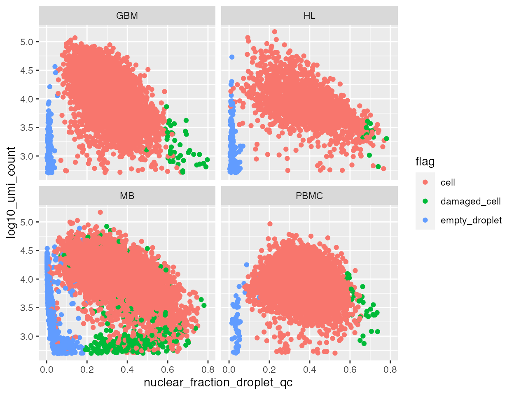
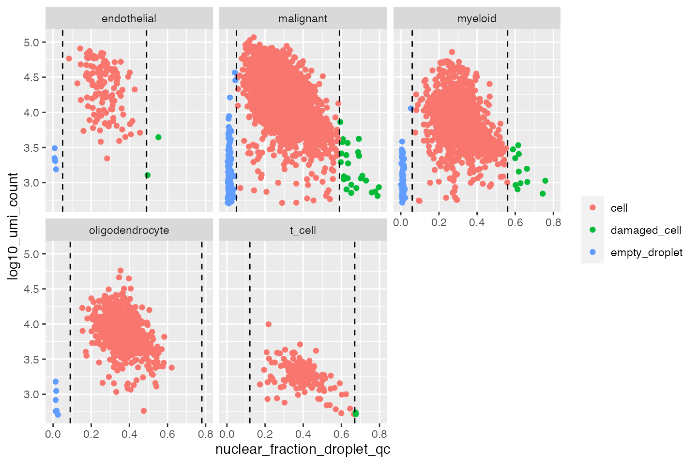

How dropletQC works
To calculate the nuclear fraction score for each provided cell barcode, we use the nuclear_fraction_tags function. This simply scans the ‘CB’ and ‘RE’ tags in the provided indexed Cell Ranger barcoded bam file. To access these tags it uses a strategy similar to this:
library(Rsamtools)
library(GenomicRanges)
# Create a reference to the BAM file
bam_file <-
BamFile(system.file("extdata", "outs", "possorted_genome_bam.bam",
package = "dropletQC"))
# Define some genomic intervals to pull data from
intervals <- GRanges(seqnames = "chr1",
ranges = IRanges(start = c(1, 1180, 4880),
end = c(10, 1190, 4890)))
# Pull CB and RE tags from the specified regions in the BAM file
sapply(1:3, function(x)
scanBam(bam_file,
param = ScanBamParam(
tag = c("CB", "RE"),
which = intervals[x]
))[[1]]$tag)## [,1] [,2] [,3]
## CB "AAAAGTCACTTACTTG-1" "AAAAGTCACTTACTTG-1" "AAAAGTCACTTACTTG-1"
## RE "E" "I" "N"‘CB’ is the error-corrected cell barcode sequence and ‘RE’ is one of three single characters representing the region type of the read; E (exonic), N (intronic) or I (intergenic). The nuclear fraction score that is returned by nuclear_fraction_tags is simply E/(E+N) for each provided cell barcode. To speed up the processing of the (usually large) BAM file, dropletQC splits the BAM file into a number of genomic tiles and processes them in parallel by internally calling furrr::future_map.
Calculating the nuclear fraction score
There are two ways to use nuclear_fraction_tags; point it to the Cell Ranger ‘outs’ directory or point it to the individual files. The simplest way is to rely on the consistent structure of the ‘outs’ directory produced by the Cell Ranger software:
library(dropletQC)
nf1 <- nuclear_fraction_tags(
outs = system.file("extdata", "outs", package = "dropletQC"),
tiles = 10,
cores = 1,
verbose = FALSE
)
head(nf1)## nuclear_fraction
## AAAAGTCACTTACTTG-1 0.05025126
## AAAAGTGGATCTCTAA-1 0.03804348
## AAACACGTTCTCATCG-1 0.02985075
## AAACAGGCAGCGACTG-1 0.06451613
## AAAGCAGTTACGAAGA-1 0.04624277
## AAAGCGGATGCATGGT-1 0.03821656
# This assumes the following three files are present in the specified directory:
list.files(system.file("extdata", "outs", package = "dropletQC"),
recursive = TRUE)## [1] "filtered_feature_bc_matrix/barcodes.tsv.gz"
## [2] "possorted_genome_bam.bam"
## [3] "possorted_genome_bam.bam.bai"If you don’t have this directory structure, or your files have been renamed e.g. they were given to you by a collaborator, you can specify the paths to the required files directly:
nf2 <- nuclear_fraction_tags(
bam = system.file("extdata", "outs", "possorted_genome_bam.bam", package =
"dropletQC"),
barcodes = c(
"AAAAGTCACTTACTTG-1",
"AAAAGTGGATCTCTAA-1",
"AAACACGTTCTCATCG-1"
),
tiles = 10,
cores = 1,
verbose = FALSE
)
nf2## nuclear_fraction
## AAAAGTCACTTACTTG-1 0.05025126
## AAAAGTGGATCTCTAA-1 0.03804348
## AAACACGTTCTCATCG-1 0.02985075Note that here we have provided a vector of requested barcode IDs to the barcodes argument rather than the path to a file on disk ‘barcodes.tsv.gz’. Either is fine, just make sure the format of your barcodes matches the BAM file.
Assessing the nuclear fraction score
Once you’ve calculated the nuclear fraction score you can use it to help identify damaged cells or empty droplets. We provide some pre-calculated scores, as well as some additional metrics and information, from four single cell RNA-seq datasets produced and made publicly available by 10x Genomics:
Mouse E18 Combined Cortex, Hippocampus and Subventricular Zone Cells, ~10k cells dataset link
Human Glioblastoma Multiforme, ~5k cells dataset link
PBMCs from a Healthy Donor, ~10k cells dataset link
Hodgkin’s Lymphoma, Dissociated Tumour, ~5k cells dataset link
Each dataset has been pre-filtered using DropletUtils::emptyDrops and a 15% mitochondrial gene content cutoff.
## sample cell_barcode umap_1 umap_2
## AAACCCAAGGCGATAC-1 GBM AAACCCAAGGCGATAC-1 -7.221113 -16.802812
## AAACCCAAGGCTGTAG-1 GBM AAACCCAAGGCTGTAG-1 -8.374323 -4.323620
## AAACCCACAAGTCCCG-1 GBM AAACCCACAAGTCCCG-1 2.303067 7.180564
## AAACCCACAGATGCGA-1 GBM AAACCCACAGATGCGA-1 -8.258726 -2.813064
## AAACCCACAGGTGAGT-1 GBM AAACCCACAGGTGAGT-1 8.892445 -7.549429
## AAACCCAGTCTTGCGG-1 GBM AAACCCAGTCTTGCGG-1 5.422224 5.287473
## seurat_clusters cell_type umi_count log10_umi_count
## AAACCCAAGGCGATAC-1 10 t_cell 2226 3.347525
## AAACCCAAGGCTGTAG-1 12 myeloid 1063 3.026533
## AAACCCACAAGTCCCG-1 0 malignant 17883 4.252440
## AAACCCACAGATGCGA-1 7 myeloid 8172 3.912328
## AAACCCACAGGTGAGT-1 4 oligodendrocyte 9057 3.956984
## AAACCCAGTCTTGCGG-1 3 malignant 5612 3.749118
## percent_mt empty_drops_log_prob empty_drops_p_value
## AAACCCAAGGCGATAC-1 4.716981 -3881.078 9.999e-05
## AAACCCAAGGCTGTAG-1 2.916275 -2466.427 9.999e-05
## AAACCCACAAGTCCCG-1 1.509814 -24925.024 9.999e-05
## AAACCCACAGATGCGA-1 6.485560 -11318.990 9.999e-05
## AAACCCACAGGTGAGT-1 3.157779 -17035.760 9.999e-05
## AAACCCAGTCTTGCGG-1 0.427655 -13173.289 9.999e-05
## empty_drops_fdr nuclear_fraction_droplet_qc
## AAACCCAAGGCGATAC-1 0.0001044711 0.1947243
## AAACCCAAGGCTGTAG-1 0.0001044711 0.2766798
## AAACCCACAAGTCCCG-1 0.0000000000 0.1843824
## AAACCCACAGATGCGA-1 0.0000000000 0.2919902
## AAACCCACAGGTGAGT-1 0.0000000000 0.3295617
## AAACCCAGTCTTGCGG-1 0.0000000000 0.3795893
## nuclear_fraction_velocyto flag
## AAACCCAAGGCGATAC-1 0.2612048 cell
## AAACCCAAGGCTGTAG-1 0.3563123 cell
## AAACCCACAAGTCCCG-1 0.2012495 cell
## AAACCCACAGATGCGA-1 0.3429289 cell
## AAACCCACAGGTGAGT-1 0.3589220 cell
## AAACCCAGTCTTGCGG-1 0.3823998 cell
# How many cells in each dataset
table(qc_examples$sample)##
## GBM HL MB PBMC
## 5516 2734 9658 9689We can look at the distribution of nuclear fraction scores directly:
library(ggplot2)
library(dplyr)
p <- ggplot(qc_examples, aes(x=nuclear_fraction_droplet_qc))
p + geom_density() +
facet_wrap(~sample)
But it is often helpful to visualise the scores against the (log10) UMI count of each cell:
p <- p + aes(y=log10_umi_count) +
geom_point() +
facet_wrap(~sample)
p
Intuitively, empty droplets and damaged cells have a lower RNA content. We can see this more easily if we colour the cells by our classifications, saved in the ‘flag’ column:
p + aes(colour=flag)
Droplets containing only ambient RNA will have a low nuclear fraction score, while damaged cells will tend to have a higher score. If your sample contains heterogeneous cell populations, it is recommended to assess these plots separately for each cell type. Your QC metrics are unlikley to be completely independent of the biology of your cells. For example, some cell types or states will naturally have a lower RNA content and may appear as outliers if not analysed separately. To illustrate this point we’ll have a quick look at the glioblastoma dataset, where a rough cell type annotation has already been performed:
# Get the data for the glioblastoma example
gbm <- dplyr::filter(qc_examples, sample == "GBM")
ggplot(gbm, aes(x = umap_1, y = umap_2, colour = cell_type)) +
geom_point() +
facet_wrap(~ sample)
Now we look at both the number of UMIs and the nuclear fraction score, split by cell type:
p1 <-
ggplot(data = gbm,
aes(x = nuclear_fraction_droplet_qc, group = cell_type, fill = cell_type)) +
geom_density(adjust = 1.5, alpha = .4) + ggtitle("Nuclear fraction score")
p2 <-
ggplot(data = gbm,
aes(x = log10_umi_count, group = cell_type, fill = cell_type)) +
geom_density(adjust = 1.5, alpha = .4) + ggtitle("log10(UMI count)")
p1
p2
The nuclear fraction scores are approximately normally distributed for each cell type. A value of +/- three standard deviations from the mean is a reasonable, if conservative, starting point for assigning thresholds. Here is an example of applying thresholds to the glioblastoma dataset:
# Define nuclear fraction thresholds
thresholds <- tribble(
~cell_type, ~lower, ~upper,
"endothelial", 0.05, 0.49,
"malignant", 0.05, 0.59,
"myeloid", 0.06, 0.56,
"oligodendrocyte", 0.09, 0.78,
"t_cell", 0.12, 0.67)
# Plot thresholds
ggplot(gbm, aes(x=nuclear_fraction_droplet_qc, y=log10_umi_count, colour=flag)) +
geom_point() +
theme(legend.title=element_blank()) +
facet_wrap(~cell_type)+
geom_vline(data = thresholds, aes(xintercept = lower), linetype = "dashed") +
geom_vline(data = thresholds, aes(xintercept = upper), linetype = "dashed") Using a combination of metrics, such as mitchondrial gene content, number of UMIs and the nuclear fraction score can often be helpful.
It will usually be desirable to exclude empty droplets from your dataset. However, depending on the nature of your sample and your biological question, damaged cells may still retain plenty of useful information. In that case you may want to just mark these cells, keeping the metadata at hand throughout downstream analyses.
It’s difficult to provide guidance on where to place thresholds that will be applicable in every circumstance. However, before deciding to exclude a population of cells we recommend pausing to consider whether the data are consistent with your expectations and knowledge of the biology of each cell type in your sample:
Does it make sense that a cluster of large malignant cells has a very low RNA content, or are they more likely to represent empty droplets?
Should a cluster of t-cells which appears to be an outlier be excluded or do they just have a lower average RNA content?
Do the sensitive cell types in a brain sample, astrocytes and neurons, represent the majority of damaged cells?
Thinking through questions like these will be more fruitful than blindly following rules of thumb that may be inappropriate for your dataset or research question.
Gene-level counts
Note that if you have run a counting pipeline, such as velocyto to quantify spliced and unspliced counts, you already have the information you need to calculate the nuclear fraction. If for example you have run velocyto run10x you could use the following:
import scanpy as sc
# Import loom file
adata = sc.read_loom("velocyto.loom")
# Calculate the nuclear fraction using the spliced and unspliced matrices
exon_sum = adata.layers['spliced'].sum(axis=1)
intron_sum = adata.layers['unspliced'].sum(axis=1)
nuclear_fraction = intron_sum/(exon_sum + intron_sum)Counting pipelines like these are much more powerful, as they provide spliced and unspliced counts per gene as well as per cell barcode. This additional information allows you to perform further analyses, such as RNA velocity, that can take advantage of this additional information. The trade-off here is time - dropletQC::nuclear_fraction_tags ignores UMIs and gene-level information in order to calculate the nuclear fraction score quickly. Here is a comparison of the nuclear fraction scores calculated with dropletQC::nuclear_fraction vs the output from velocyto:
ggplot(data = qc_examples,
aes(x = nuclear_fraction_droplet_qc, y = nuclear_fraction_velocyto)) +
geom_point() +
facet_wrap( ~ sample)
As always, your choice of tool will depend on what you are trying to do. If you just want to calculate a nuclear fraction score for QC, this package should be sufficient. If you’re interested in looking at gene expression dynamics, a more sophisticated tool like velocyto will be required.